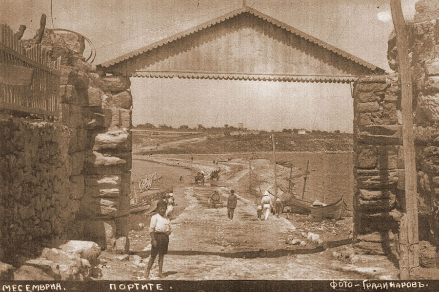

В края на 6 век пр. н. е. пристигат първите гръцки заселници - по произход дорийци. Градът постепенно се разраства, построени са храмове, училище и театър.
Месабрия започва да сече собствени монети около 440 година пр. н. е., приблизително оттогава са сечени и първите златни монети.
Градът има добри търговски отношения с полисите на Черно и Егейско море и Средиземноморието. Находки, свидетелстващи за богатия икономически,
културен и духовен живот от този период, са изложени в археологическия музей в града.
През 72 г. пр. н. е. градът е завзет без никаква съпротива от римляните. След кратка окупация, през 1 век градът става част от Римската империя. Месемврия, както е наречен тогава, със своите непокътнати крепостни стени и големи обществени сгради,
продължава да сече собствени бронзови монети и остава важен търговски и културен център на черноморското крайбрежие на римска Тракия.
Градът за пръв път става част от българската държава през 812 година, когато хан Крум го щурмува и завладява, и славяни и българи се заселват тук.
Несебър, както славяните нарекли града, остава в български ръце за дълъг период, по време на царуването на цар Симеон Велики.
След почти 40 години византийско владичество, Несебър отново влиза в пределите на българската държава през 1304 г.
по времето на цар Теодор Светослав. Градът претърпява голям разцвет по времето на цар Иван Александър.
През 1366 г. градът е превзет от рицарите на граф Амедео ди Савоя и по-късно е преотстъпен на византийския император.
Градът е нападнат от турците за пръв път през 1396 г. Окончателното му падане в ръцете на отоманската империя става през 1453 г., заедно със столицата Константинопол.
През годините на османско владичество икономическият и културният живот не секват. Построени са църкви, изписвани са икони.
Пристанището на Несебър продължава да бъде главен външнотърговски център на Черно море.
Някои от манастирите и метосите около Несебър просъществуват чак до 18-19 век. Запазени са много къщи от периода на Възраждането -
типични представители на черноморската архитектура, като и много вятърни мелници, обществени бани и чешми.

Културното наследство на Несебър е запазено в пет музейни експозиции.
Археологическият музей представя богата сбирка експонати от Античността, Средновековието и Възраждането.
Несебър е обявен за архитектурен и археологически резерват през 1956 г., а през 1983 г.
културните паметници в града са прибавени към списъка на ЮНЕСКО за световно културно наследство.